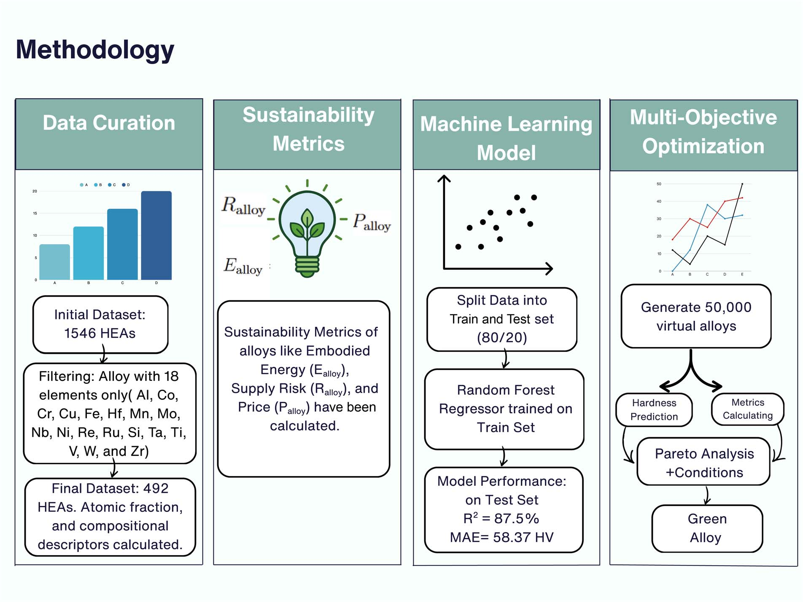

Published · 2026
Pareto-optimization of sustainable high-entropy alloys: balancing hardness and sustainability via machine learning
Journal of Materials Chemistry A
Random Forest + sustainability metrics + Pareto optimization across 50,000 virtual compositions. Champion: Fe₀.₅₅Al₀.₂₅Si₀.₁₇Mn₀.₀₂Ni₀.₀₂, ~1126 HV and 87 MJ kg⁻¹ embodied energy.